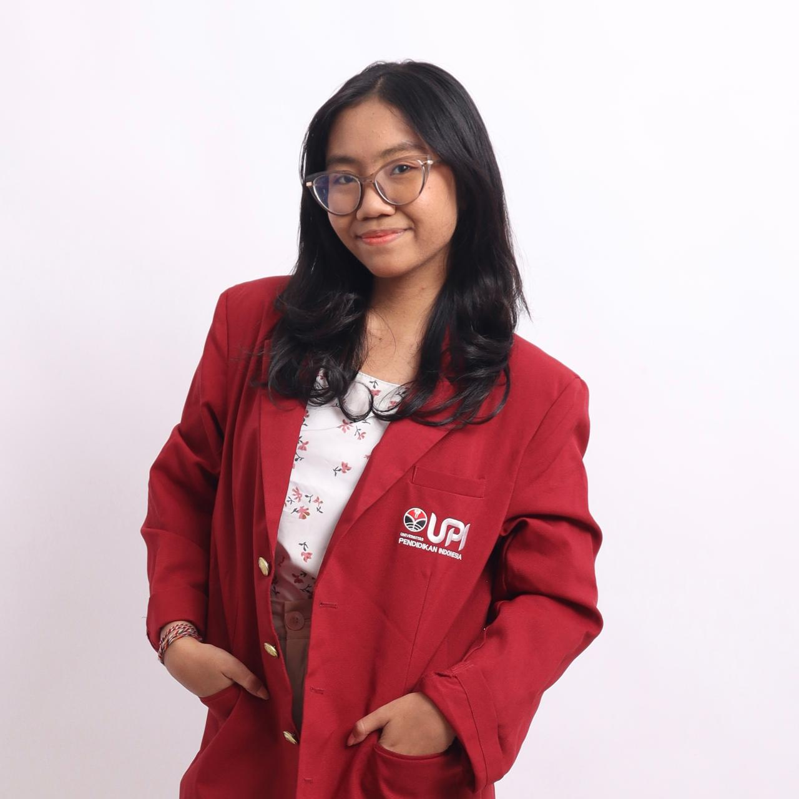

Halo semuanya! Perkenalkan, nama saya Kesya. Saya adalah seorang mahasiswa yang sedang menempuh pendidikan di perguruan tinggi. Saat ini, saya terus berusaha mengembangkan diri, memperluas wawasan, dan meningkatkan kemampuan melalui berbagai pengalaman, baik dalam kegiatan akademik maupun kegiatan di luar perkuliahan.
Bagi saya, masa perkuliahan bukan hanya tentang memperoleh ilmu pengetahuan di dalam kelas, tetapi juga menjadi kesempatan untuk belajar mengenali diri sendiri, membangun relasi, melatih tanggung jawab, serta mempersiapkan diri untuk menghadapi dunia kerja di masa depan.
Sebagai mahasiswa, saya memiliki semangat untuk terus belajar dan memahami berbagai materi yang berkaitan dengan bidang studi yang saya tekuni. Saya berusaha memanfaatkan proses perkuliahan sebagai sarana untuk meningkatkan kemampuan berpikir kritis, menyelesaikan permasalahan, bekerja secara sistematis, dan menerapkan teori yang telah dipelajari ke dalam situasi nyata.
Saya menyadari bahwa proses belajar merupakan perjalanan yang membutuhkan konsistensi, kedisiplinan, dan kemauan untuk terus memperbaiki diri. Oleh karena itu, saya berusaha untuk tetap terbuka terhadap pengetahuan baru dan menjadikan setiap tantangan sebagai kesempatan untuk berkembang.
Saya merupakan pribadi yang senang belajar hal-hal baru dan berusaha menyelesaikan tanggung jawab dengan sebaik mungkin. Saya percaya bahwa setiap orang memiliki kelebihan dan kekurangan masing-masing, sehingga penting bagi saya untuk terus melakukan evaluasi diri agar dapat menjadi pribadi yang lebih baik.
Dalam menjalankan aktivitas sehari-hari, saya berusaha untuk bersikap disiplin, bertanggung jawab, dan menghargai pendapat orang lain. Saya juga memahami bahwa komunikasi yang baik, sikap saling menghormati, dan kemampuan bekerja sama merupakan hal penting dalam membangun hubungan yang positif dengan orang lain.
Bagi saya, kesalahan bukanlah akhir dari sebuah proses, melainkan kesempatan untuk belajar dan memahami hal-hal yang perlu diperbaiki.
Saya tertarik pada berbagai kegiatan yang dapat memberikan pengalaman baru dan menambah pengetahuan. Saya senang mempelajari hal-hal yang bermanfaat, mengeksplorasi ide-ide baru, serta mencoba berbagai cara untuk mengembangkan kemampuan diri.
Selain kegiatan akademik, saya juga tertarik pada aktivitas yang dapat melatih kreativitas, meningkatkan produktivitas, dan membantu saya melihat suatu permasalahan dari sudut pandang yang berbeda. Saya percaya bahwa memiliki minat yang beragam dapat membantu seseorang menjadi lebih terbuka, kreatif, dan adaptif terhadap perubahan.
Selama menjalani masa perkuliahan, saya terus berusaha mengembangkan beberapa kemampuan penting, seperti komunikasi, kerja sama tim, manajemen waktu, pemecahan masalah, dan berpikir kritis.
Saya memahami bahwa kemampuan tersebut tidak dapat dikuasai secara instan, tetapi perlu dilatih melalui pengalaman dan proses pembelajaran yang berkelanjutan. Oleh karena itu, saya berusaha mengambil pelajaran dari setiap kegiatan yang saya ikuti, menerima masukan yang membangun, dan memperbaiki kekurangan yang masih saya miliki.
Saya juga berusaha untuk lebih percaya diri dalam menyampaikan pendapat, beradaptasi dengan lingkungan baru, serta bekerja sama dengan orang-orang yang memiliki karakter dan cara berpikir yang berbeda.
Bagi saya, setiap pengalaman memiliki nilai pembelajaran tersendiri. Melalui tugas kelompok, kegiatan perkuliahan, dan berbagai aktivitas lainnya, saya belajar bahwa keberhasilan tidak hanya ditentukan oleh kemampuan individu, tetapi juga oleh komunikasi, koordinasi, dan komitmen untuk mencapai tujuan bersama.
Saya belajar untuk menghargai proses, menghadapi tantangan dengan lebih tenang, serta mencari solusi ketika menemukan kesulitan. Pengalaman tersebut membantu saya memahami pentingnya tanggung jawab dan kemampuan beradaptasi dalam menghadapi berbagai situasi.
Saya percaya bahwa pengalaman sederhana sekalipun dapat memberikan pelajaran berharga apabila dijalani dengan sikap terbuka dan kemauan untuk belajar.
Ke depannya, saya ingin menjadi pribadi yang lebih kompeten, mandiri, dan mampu memberikan kontribusi positif bagi lingkungan sekitar. Saya berharap dapat menyelesaikan pendidikan dengan baik, memperluas pengalaman, meningkatkan keterampilan, serta mempersiapkan diri untuk menghadapi tantangan di dunia profesional.
Saya juga ingin terus mengembangkan potensi yang saya miliki dan tidak mudah merasa puas dengan pencapaian saat ini. Bagi saya, kesuksesan bukan hanya tentang mencapai suatu tujuan, tetapi juga tentang bagaimana proses tersebut membentuk karakter, pola pikir, dan kemampuan diri.
Saya menyadari bahwa perjalanan untuk mencapai tujuan tidak selalu berjalan sesuai rencana. Namun, saya percaya bahwa dengan usaha yang konsisten, kemauan untuk belajar, dan sikap pantang menyerah, setiap langkah kecil dapat membawa saya lebih dekat pada masa depan yang diharapkan.
Itulah sedikit perkenalan mengenai diri saya. Saya berharap dapat terus belajar, bertumbuh, dan memperoleh pengalaman yang bermakna dalam setiap perjalanan yang saya jalani.
Saya percaya bahwa setiap individu memiliki kesempatan untuk berkembang dan menciptakan versi terbaik dari dirinya sendiri. Oleh karena itu, saya ingin terus melangkah, mencoba hal-hal baru, dan menjadikan setiap pengalaman sebagai bagian dari proses menuju masa depan yang lebih baik.
Terima kasih telah meluangkan waktu untuk mengenal saya lebih jauh. Senang bisa berbagi sedikit cerita tentang diri saya melalui halaman ini!
Kunjungi kampus saya: Universitas Pendidikan Indonesia